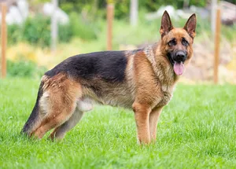
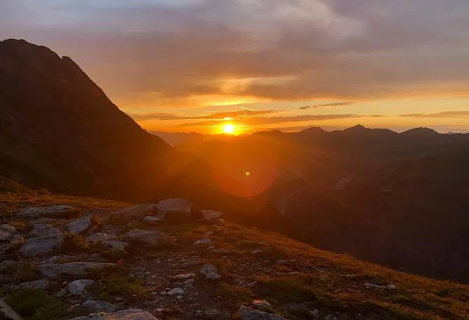

1. Formación Académica
Mi formación empezó en una escuela llamada Domingo Savio; cursé ahí hasta 6to de básica. De ahí me cambié al colegio UES (Unidad Educativa Sígsig) donde me gradué, y ahora estoy estudiando en el Instituto Sudamericano.
Mi formación empezó en una escuela llamada Domingo Savio; cursé ahí hasta 6to de básica. De ahí me cambié al colegio UES (Unidad Educativa Sígsig) donde me gradué, y ahora estoy estudiando en el Instituto Sudamericano.
Soy Joao Bautista León Delgado, tengo 20 años y nací en mi pueblo llamado Sígsig (Azuay). Mi padre se llama Juan y mi madre Nancy; tengo 2 hermanos y 1 hermana.
Me gustaría graduarme de la carrera de desarrollo de software, también me gustaría hacer la ingeniería y especializarme en ciberseguridad. Sé que es un camino largo y difícil, pero no imposible.

